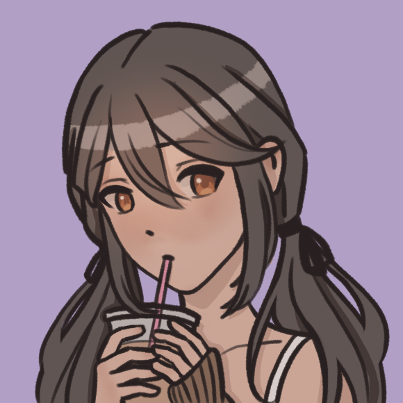
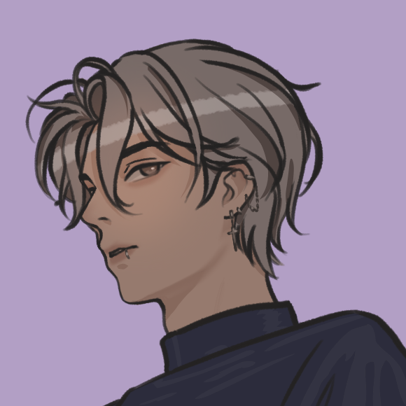
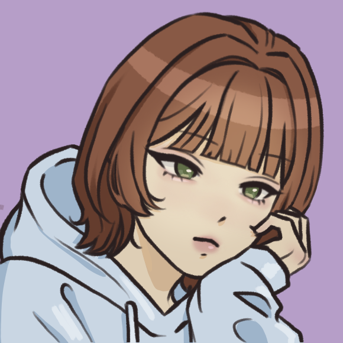
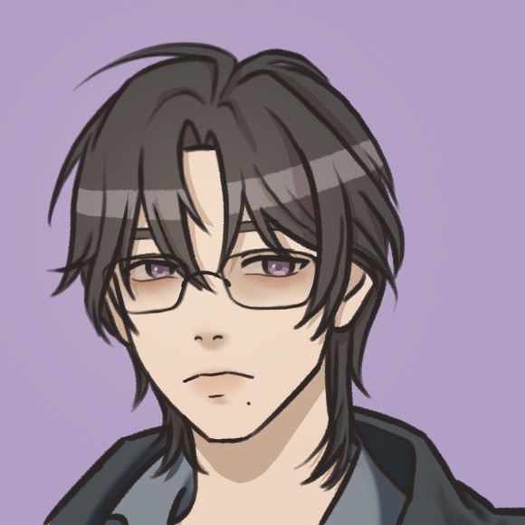
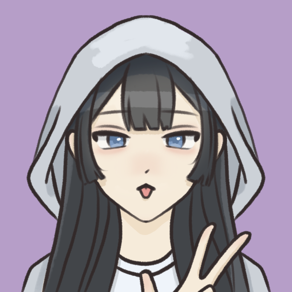
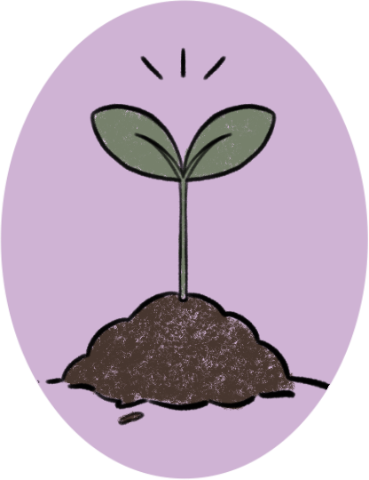
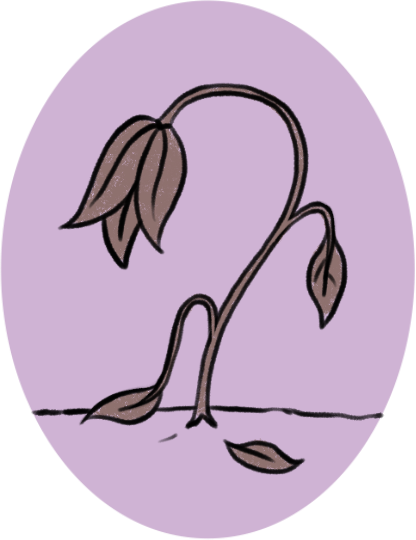
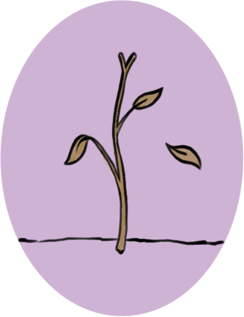
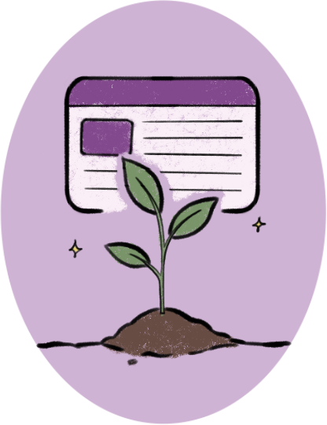
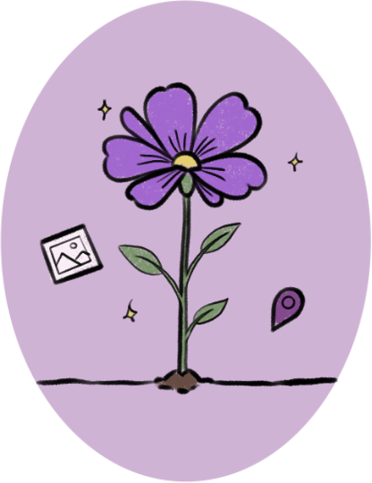

Leadership Team

Founder and Creative Director
Aurien Valeir is the founder of Rebloom Studios and is currently an accounting student at Rutgers University. For many years, she drew daily and considered pursuing art professionally, even exploring the idea of webcomics as a way to share her work. Over time, shifting circumstances and growing self-doubt caused that creative momentum to fade, eventually leading to the creation of Rebloom Studio. The platform now serves as both a creative outlet and an ongoing attempt to reconnect with that earlier sense of artistic direction and curiosity.
Editorial Team

Content Editor
Elira Solenne is one of Aurien’s closest friends, though much of her academic and professional history remains deliberately under-discussed. At Rebloom Studio, she is responsible for proofreading and refining written content, often catching errors introduced during late-night writing sessions and rapidly declining attention spans. Her role ensures that the studio’s writing remains clear, intentional, and readable.

Technical Editor
Hayden Arroyal is currently a computer science major at Rutgers University, and unfortunately for him, Aurien’s boyfriend. He manages technical editing and assists with site-related issues, often stepping in to resolve bugs, formatting problems, and other unexpected complications that tend to appear at inconvenient hours. His involvement is less formal employment and more ongoing technical intervention.
Contributors

Art Consultant
As an art student at Montclair University, Maelis Corvaine is Aurien’s primary source of creative feedback. She provides input on artistic direction, composition, and visual development, as well as guidance on which works align best with the studio’s overall tone and direction. Her perspective helps refine both individual pieces and broader creative decisions.

Technical Advisor
Lucien Valeir is Aurien's older brother and an unofficial technical advisor who became involved by proximity rather than choice. A civil engineer by profession and a dedicated game enthusiast in his free time, he provides practical input on tools, systems, and technical questions related to the creative process. His role is essential, if not entirely voluntary.

Research Contributor
Seren Virelle is a psychology student at Rutgers University and one of Aurien’s good friends. She contributes by researching relevant topics and compiling supporting material for projects. Her work is consistently thorough, often fueled by an impressive ability to postpone her own academic responsibilities in favor of helping with studio-related tasks.
Our Story

2020
Rebloom began as a personal idea during COVID, when Aurien first started taking commissions. The concept and name were completely different and would have likely been hosted using Carrd as a reference point for potential clients.

2021-2023
During this time, Aurien’s self-criticism and standards only grew, especially because she wanted illustrations that were “good enough” to display on a portfolio page. Amid growing frustrations and additional responsibilities in her daily life, Aurien experienced severe creative burnout. As a result, the initial portfolio page never came into existence.

2024
By this time, Aurien no longer draws and has gone through several short periods where she tries to get back into drawing, only to stop again

2025
Aurien began learning about HTML and the basics of website design. The concept of the abandoned portfolio website resurfaced, and it evolved. Rather than a plain portfolio website, the focus shifted to something more personal, centered on reviving artistic motivation.

2026
As Rebloom entered its initial stages of development, Rebloom Studio, initially a one-man team, grew slowly in size. Today, the website contains multiple elements: an art inventory documenting progress, written reflections on burnout, product reviews, and an interactive map of different drawing locations. The site represents both creative struggle and renewal and seeks to inspire other burnt-out artists to rediscover their love for art.